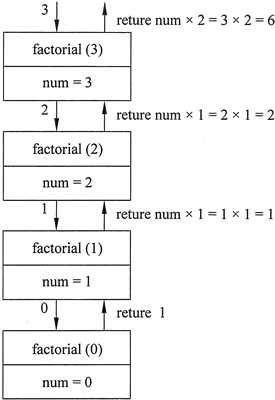
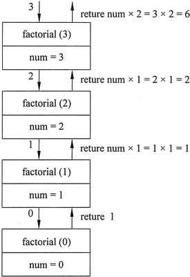

首页 > 编程笔记
C++阶乘函数（递归）详解
递归计算阶乘函数将接收一个整数参数并计算其阶乘。现在不妨用数学的例子来检验一个递归的应用。
在数学中，符号 n! 表示数字 n 的阶乘。整数 n 的阶乘被定义如下。
可以使用递归定义一个数的阶乘，如下所示：

图 1 递归阶乘函数图解
下面的程序演示了 factorial 函数的使用:
在数学中，符号 n! 表示数字 n 的阶乘。整数 n 的阶乘被定义如下。
n! = 1 X 2 X 3 X … X n; 如果 n>0
n =1; 如果 n = 0
可以使用递归定义一个数的阶乘，如下所示：
factorial(n) = n X fafactorial(n-1); 如果 n> 0
factorial(n) = 1; 如果 n = 0
int factorial(int num)
{
if (num == 0) //基本情况返回1;
return 1;
else
return num * factorial(num - 1);
}
来看一个显示 3! 的值的程序，其语句如下：cout << factorial(3) << endl;
第一次调用该函数时，num 被设置为 3，所以 if 语句将执行以下代码行：return num * factorial(num - 1);
虽然这是一个 return 语句，但它并不会立即返回，这是因为在确定返回值之前，必须确定 factorial(num-1) 的值。该函数被递归调用，直到第 4 次调用，其中的 num 参数将被设置为 0。图 1 中直观地说明了函数每次调用期间 num 的值和返回值。
图 1 递归阶乘函数图解
下面的程序演示了 factorial 函数的使用:
// This program demonstrates a recursive function // to calculate the factorial of a number. #include <iostream> using namespace std; // Function prototype int factorial(int); int main() { int number; cout << "Enter an integer value and I will display\n"; cout << "its factorial: "; cin >> number; cout << "The factorial of " << number << " is "; cout << factorial (number) << endl; return 0; } int factorial(int num) { if (num == 0) //base case return 1; else return num * factorial(num - 1); }程序输出结果：
Enter an integer value and I will display
its factorial: 4
The factorial of 4 is 24
关注公众号「站长严长生」，在手机上阅读所有教程，随时随地都能学习。内含一款搜索神器，免费下载全网书籍和视频。

微信扫码关注公众号